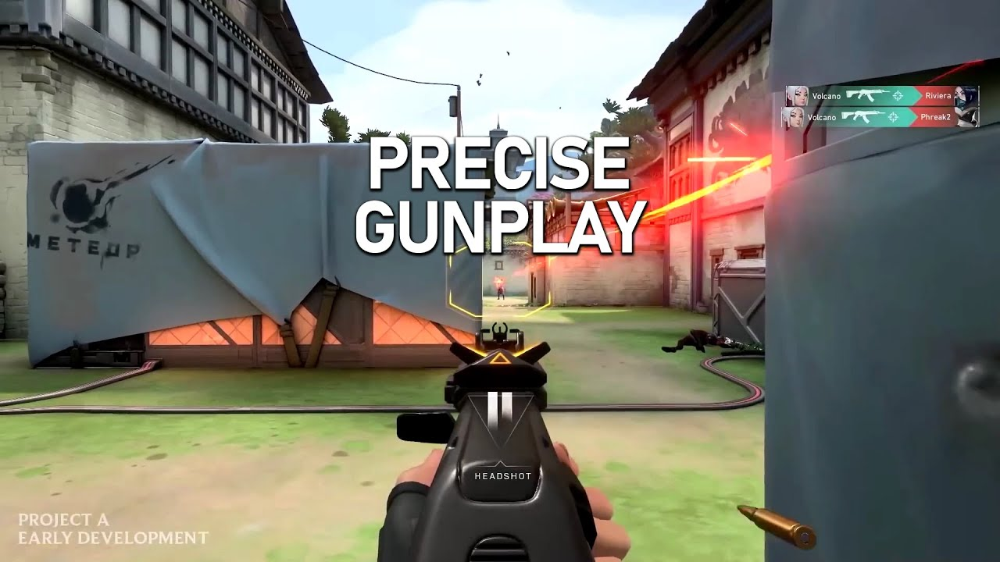

Valorant
Kezdőlap |
Játékmenet |
Karakterek |
Képességek |
Fegyverek |
Játékmódok |
Pályák |
A Valorant egy ingyenesen játszható belső nézetű hőslövöldözős játék, melyet a Riot Games fejlesztett és
adott
ki Microsoft Windows rendszerekre. A Project A kódnéven először 2019 októberében bemutatott játék 2020. április
7-én
megkezdte a zárt béta időszakát, korlátozott hozzáféréssel, majd 2020. június 2-án jelent meg hivatalosan. A
játék fejlesztése 2014-ben kezdődött.
